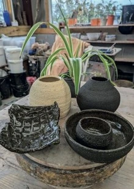

Sarah Holyfield

Rwy’n gweithio gyda ffotograffiaeth, technoleg a deunyddiau i archwilio ein hamgylchedd a’r cyd- destun gwleidyddol a chymdeithasol yr ydym ynddo.
Byddaf yn rhannu gofod y Stiwdio Agored gyda Liesbeth Williams.
I work with photography, technology and materials to explore our environment and the political and social context in which we find ourselves.
I will be sharing the Open Studio space with Liesbeth Williams.
07901 807987
s.e.holyfield@btinternet.com
sarahholyfield.com
RHOS UCHAF, LLANSADWRN, LL59 5SR RHOS UCHAF, LLANSADWRN, LL59 5SR
Ewch ar y B5109 Biwmares/Pentraeth ac ar gyrion Llansadwrn, cymerwch y troad Llanddona/Wern y Wylan. Rhos Uchaf yw’r trydydd ar y dde. Trowch drwy’r giât i’r lle parcio ger y bwthyn.
Take B5109 Beaumaris/Pentraeth road and on outskirts of Llansadwrn take Llanddona/Wern y Wylan turning. Rhos Uchaf is third on the right Turn through the gate to the parking area by the cottage.
Liesbeth Williams

Rwy’n artist tecstilau. Dewch i weld darnau wedi’u fframio, croglenni a chwiltiau.
Tra’n gyfoes, mae rhai o’m gweithiau yn cael eu dylanwadu gan hen batrymau Cymreig.
Gwerthu ffabrigau a llyfrau.
Rwy’n rhannu’r stiwdio gyda Sarah Holyfield.
I am a textile artist. Come and see framed pieces, wall hangings and quilts.
Whilst contemporary, some work is influenced by old Welsh patterns.
Sale of fabrics & books.
I will be sharing the studio with Sarah Holyfield.
07749257708
liesbethwilliams@hotmail.com
liesbethwilliams.com
RHOS UCHAF, LLANSADWRN, LL59 5SR RHOS UCHAF, LLANSADWRN, LL59 5SR
Ewch ar y B5109 Biwmares/Pentraeth ac ar gyrion Llansadwrn, cymerwch y troad Llanddona/Wern y Wylan. Rhos Uchaf yw’r trydydd ar y dde. Trowch drwy’r giât i’r lle parcio ger y bwthyn.
Take B5109 Beaumaris/Pentraeth road and on outskirts of Llansadwrn take Llanddona/Wern y Wylan turning. Rhos Uchaf is third on the right Turn through the gate to the parking area by the cottage.